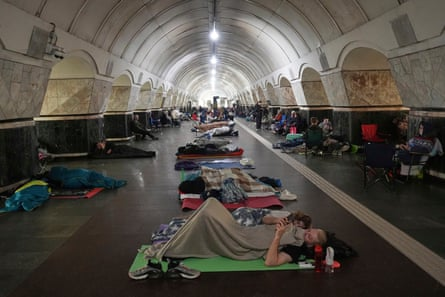

A huge wave of Russian strikes on Ukraine’s capital killed two people and left more wounded, Kyiv’s military administration said early on Thursday, with reports of loud blasts echoing over the city throughout the night.
The administration warned of a threat from drones and ballistic weapons and told all residents to “immediately head to the nearest shelters”. Dozens of residents of the capital took shelter in a central metro station during the attack, an Agence France-Presse reporter said, sleeping on mats, calming pets or waiting out the attack on camping furniture.
Kyiv’s mayor, Vitali Klitschko, said falling debris sparked fires at buildings in the districts of Solomyansky and Shevchenkivsky. Falling drone debris also caused fires at garages and a gas station in another capital district, Darnytsky.
The latest Russian assault comes a day after Moscow pummelled Ukraine with its largest missile and drone attack in more than three years of war, killing at least one civilian.
Russia’s record barrage points to a trend of escalating attacks that have piled pressure on Ukraine’s thinly stretched air defence capabilities and exhausted civilian population.
The US secretary of state, Marco Rubio , is to meet with the Russian foreign minister, Sergei Lavrov, on the sidelines of the Asean foreign ministers’ meeting in Kuala Lumpur on Thursday.
People rest in a metro station, being used as a bomb shelter, during the Russian attack on Kyiv.Photograph: Efrem Lukatsky/AP
It will be the second in-person meeting between Rubio and Lavrov and comes at a time when the US president, Donald Trump, has grown increasingly frustrated with Vladimir Putin, the Russian president, as the war in Ukraine drags on.
Trump, who returned to power this year promising a swift end to the war that began in 2022, had taken a more conciliatory tone towards Moscow in a departure from predecessor Joe Biden’s staunch support for Kyiv.
But after the US resumed some shipments of defensive weapons to Ukraine after a pause , Trump aimed unusually direct criticism at Putin , saying the Kremlin leader’s statements on moving towards peace were “meaningless”.
Trump has also said he was considering supporting a bill that would impose steep sanctions on Russia, including 500% tariffs on nations that buy Russian oil, gas, uranium and other exports.
When asked on Wednesday about Trump’s criticism of Putin, the Kremlin said Moscow was “calm” regarding the criticism and that it would continue to try to fix a “broken” US-Russia relationship.
At a conference of Ukraine-friendly nations in Rome on Wednesday, Trump’s Ukraine envoy, Keith Kellogg, met the Ukrainian president, Volodymyr Zelenskyy, in what Kyiv described as a “substantive” conversation.
With Reuters and Agence France-Presse